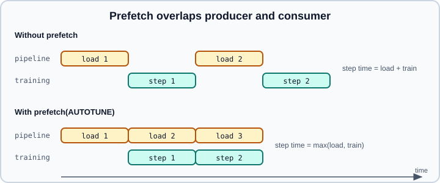

tf.data Performance
|
This content was generated with the assistance of AI and should be verified against the official documentation before being relied on in production. |
An accelerator that waits for data is an expensive space heater. A tf.data pipeline that reads, decodes and augments examples one after another on the host CPU can leave a GPU or TPU idle for most of a training step. This page covers the transformations that fix this (prefetch, cache, parallel map, interleave, vectorized batching), how tf.data.AUTOTUNE picks the parameters, the memory trade-offs, ordering and determinism, and how to tell whether the input pipeline is the bottleneck. Building pipelines in the first place is on Input Pipelines with tf.data & TFRecord, the Keras loaders that already apply some of these are on Loading Images, Text & Audio from Disk, and the broader performance picture is on Performance, XLA & Profiling.
It targets Python 3.13, TensorFlow 2.21 with Keras 3.15 (TensorFlow 2.22 is upcoming; PyTorch 2.15 is mentioned for comparison) and was checked against the official documentation on 2026-10-30. Examples were run on Python 3.13 with TensorFlow 2.21 and Keras 3.15 (CPU) on 2026-10-31. Snippets that continue an earlier example, or use names such as ds, parse and augment defined elsewhere, were run with small synthetic stand-ins, and the gs:// example was run against local TFRecord files; no timings are claimed. The PyTorch counterpart is DataLoader Performance.
The pipeline as an ETL process
The official guide frames an input pipeline as extract, transform and load. Extract reads files from local or remote storage; transform decodes and augments on the CPU; load feeds the accelerator. Without any overlap, every stage waits for the previous one. The optimizations below overlap them.

Redrawn from the idea in the official data-performance guide.
Measure first
Do not tune blindly. Two cheap checks:
-
Iterate the dataset alone with no model and time it. If a pass over the data is slower than a training epoch on the model, the pipeline is the bottleneck.
-
Open the TensorFlow Profiler’s input-pipeline analysis in TensorBoard (see TensorBoard and Performance, XLA & Profiling). It reports how much of each step the device spent waiting for input.
import time
import tensorflow as tf
def benchmark(dataset, num_epochs=2):
start = time.perf_counter()
for _ in range(num_epochs):
for _ in dataset:
pass
return (time.perf_counter() - start) / num_epochs
print("seconds per epoch:", benchmark(train_ds))Run the benchmark twice and ignore the first epoch when cache is involved, since that one pays the cost the cache removes.
prefetch
dataset.prefetch(buffer_size) runs the upstream pipeline in a background thread and keeps up to buffer_size elements ready. It should almost always be the last transformation, after batch, so that whole batches are staged.
train_ds = (
tf.data.Dataset.from_tensor_slices((images, labels))
.map(augment, num_parallel_calls=tf.data.AUTOTUNE)
.batch(64)
.prefetch(tf.data.AUTOTUNE)
)The buffer should be at least the number of batches consumed per training step; tf.data.AUTOTUNE lets the runtime choose and adjust it. With a buffer, step time approaches the larger of preparation time and training time instead of their sum, which is the effect in the figure above. On GPU-enabled setups the runtime may also stage data onto the device; tf.data.experimental.prefetch_to_device exists for explicit placement but is rarely needed for single-device training. Prefetching does not help if the pipeline is consistently slower than the model; then you need the parallelism and caching below.
Parallel map
By default map runs the function on one element at a time. Pass num_parallel_calls to process elements concurrently:
def parse_and_augment(path, label):
image = tf.io.decode_jpeg(tf.io.read_file(path), channels=3)
image = tf.image.resize(image, (224, 224))
image = tf.image.random_flip_left_right(image)
return image, label
ds = ds.map(parse_and_augment, num_parallel_calls=tf.data.AUTOTUNE)The guide’s rule of thumb for a fixed value is the number of CPU cores available; tf.data.AUTOTUNE delegates the choice to the runtime, which adapts thread counts while the pipeline runs. Mapped elements must be independent of one another, because they may complete in any order (but see the determinism section for output ordering). A fixed number larger than the core count only adds contention.
The mapped function is traced to a graph. TensorFlow image and string operations release the GIL, so they parallelize; code wrapped in tf.py_function or tf.numpy_function takes the GIL and does not.
interleave for parallel reads
When data is spread across many files (typically TFRecord shards), reading them in parallel hides storage latency, especially on remote storage. interleave maps each file to a dataset and merges their outputs.
files = tf.data.Dataset.list_files("gs://my-bucket/train-*.tfrecord")
ds = files.interleave(
tf.data.TFRecordDataset,
cycle_length=8, # files read concurrently
block_length=1, # elements taken from each file in turn
num_parallel_calls=tf.data.AUTOTUNE, # without this, reads alternate sequentially
)With only default arguments interleave alternates elements from the inputs sequentially and gives no speed-up; it is num_parallel_calls that overlaps the opening and reading of files. TFRecordDataset also accepts num_parallel_reads=tf.data.AUTOTUNE, a shorthand for reading several files at once when no per-file mapping is needed. Interleaving files also mixes the order of the data, which is a mild shuffle.
cache
dataset.cache() stores the elements in memory (no argument) or in a file (cache("/local/disk/cache")) the first time they are produced, so later epochs skip the upstream work such as opening files, decoding images or parsing.
ds = (
files.interleave(tf.data.TFRecordDataset, num_parallel_calls=tf.data.AUTOTUNE)
.map(parse, num_parallel_calls=tf.data.AUTOTUNE) # deterministic, expensive
.cache() # first epoch fills the cache
.shuffle(10_000)
.map(augment, num_parallel_calls=tf.data.AUTOTUNE) # random, must run every epoch
.batch(64)
.prefetch(tf.data.AUTOTUNE)
)Where to put it:
-
Place
cacheafter expensive deterministic work (decode, resize, parse) and before anything random, such as augmentation and shuffling. Caching after random augmentation freezes the first epoch’s random choices. -
If the post-map data is too large for memory or local disk, put the cache before the memory-hungry step, or preprocess once offline. The guide suggests splitting a function into a time-consuming part,
cache, and a memory-consuming part. -
A file cache must be on fast local storage to help; a cache on the same slow network disk as the source does not.
-
An in-memory cache of a large dataset in several worker processes duplicates memory.
If the cached dataset is only partially iterated in the first epoch, the cache is discarded and refilled; iterate it completely once. When the cache file already exists, cache reads it instead of re-running upstream steps, so delete it after changing the preprocessing.
Batch before map: vectorizing
Calling a mapped function has a fixed overhead per call. If the function works on whole batches, call it once per batch instead of once per element.
def scale(x):
return x / 255.0 # elementwise: works on a scalar or on a batch alike
slow = ds.map(scale).batch(256) # one call per element
fast = ds.batch(256).map(scale) # one call per batch of 256The official benchmark reports roughly a five-fold gain from vectorizing a trivial function; treat that as an order of magnitude, not a promise. The function must handle a leading batch dimension, which TensorFlow elementwise operations already do. Vectorization does not apply to work that is inherently per-example, such as decoding JPEG bytes with tf.io.decode_jpeg, or random per-image crops; there, parallel map is the tool. Batch-level tf.io.parse_example is a good vectorized alternative to per-record parse_single_example.
AUTOTUNE
tf.data.AUTOTUNE is a sentinel accepted by the num_parallel_calls argument of map, interleave and batch, by prefetch(buffer_size), and by TFRecordDataset(num_parallel_reads=...). It tells the tf.data runtime to tune the value at run time with a model of the pipeline’s cost. It is the recommended default. Use a fixed number when you need strict resource control, for example to leave CPU cores to other work on a shared machine, or when the autotuner’s memory budget is a concern.
Memory footprint
interleave, prefetch and shuffle all keep internal buffers. If map changes element size, its position relative to those transformations changes the memory used: a map that decodes compressed bytes into large tensors uses far more memory if it comes before a big shuffle buffer than after it. Shuffling the compressed records and decoding afterwards is the usual way to save memory, at the cost of decoding after the shuffle.
Options: determinism and optimizations
tf.data.Options collects runtime switches that are applied with dataset.with_options(options). The most commonly used one concerns ordering: by default parallel map and interleave return elements in the order of their input (deterministic). Allowing out-of-order output removes head-of-line blocking when some elements are slow:
options = tf.data.Options()
options.deterministic = False # allow reordering for speed
ds = ds.with_options(options)
# or per transformation:
ds = ds.map(parse, num_parallel_calls=tf.data.AUTOTUNE, deterministic=False)Trade-offs: non-deterministic order is a speed knob for training, but it makes runs harder to reproduce exactly; for evaluation and for debugging keep it deterministic. Other option groups cover the static optimizations tf.data applies before running (operation fusion and similar, under options.experimental_optimization), threading (options.threading, for example a private thread pool size) and autotuning behaviour (options.autotune). Their names and defaults have moved between releases, and several still carry experimental_ prefixes, so check the API page for 2.21 and the profiler results before changing them. The defaults are good for most pipelines.
A checklist
-
Measure the pipeline alone and with the profiler.
-
Put
prefetch(tf.data.AUTOTUNE)last. -
Use
num_parallel_calls=tf.data.AUTOTUNEonmapandinterleave; shard large datasets into many files. -
Cache deterministic, expensive results if they fit; keep random augmentation after the cache.
-
Batch before cheap elementwise maps.
-
Watch memory: shuffle buffers, prefetch buffers and caches add up per process.
-
For evaluation, keep deterministic order; for training, consider
deterministic=Falseif stalls remain. -
If the CPU is still the limit, move augmentation onto the accelerator with Keras preprocessing layers inside the model (see Keras Preprocessing Layers) or reduce decode cost with smaller stored images.
Common mistakes
-
Putting
prefetchbeforebatch, so only single elements are staged. -
Caching after a random augmentation, so every epoch sees the same augmentation.
-
Caching a dataset larger than memory and swapping, which is slower than not caching.
-
Using
from_generatororpy_functionfor heavy work and expecting parallel speed-up; the GIL serializes it. -
Setting
num_parallel_callswithoutdeterministicthinking, and then being surprised that order changed (or the reverse). -
Tuning the pipeline when the model step is the bottleneck. Check the profiler first; for the model side see Mixed Precision.
-
Reading many small files from remote storage without
interleaveand sharding, so latency dominates.
Generic ideas about throughput and hardware are in Hardware, Memory and Mixed Precision.